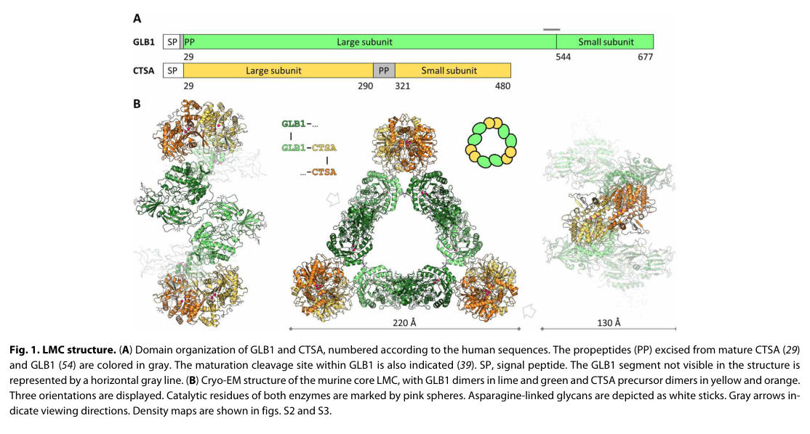

Galactosialidosis (GS) — Comprehensive Disease Characteristics Report
Executive summary
Galactosialidosis (GS) is an ultra-rare, autosomal recessive lysosomal storage disorder caused by biallelic loss-of-function variants in CTSA (cathepsin A), which encodes the lysosomal protective protein/cathepsin A (PPCA). PPCA is required for proper lysosomal trafficking, stability, and activation of neuraminidase-1 (NEU1) and stabilization of β-galactosidase (GLB1) within a lysosomal multienzyme complex (LMC); therefore, CTSA deficiency produces a characteristic combined secondary deficiency of NEU1 and GLB1 and intralysosomal accumulation/excretion of sialylated glycoconjugates. Clinically, GS is classically partitioned into early-infantile, late-infantile, and juvenile/adult subtypes with systemic, skeletal, ocular, cardiac, renal, and neurologic involvement; there is no disease-modifying therapy in routine clinical use, but preclinical enzyme replacement and CNS-directed delivery studies show proof-of-concept biochemical and histopathologic correction in mouse models. (caciotti2013galactosialidosisreviewand pages 1-2, spoel1998transportofhuman pages 1-2, cadaoas2021galactosialidosispreclinicalenzyme pages 9-12)
1. Disease information
1.1 Definition and overview
GS is a lysosomal glycoprotein storage disease due to primary PPCA (CTSA) deficiency with secondary combined deficiency of NEU1 and GLB1, leading to impaired glycoprotein/glycolipid catabolism and storage of sialylated oligosaccharides/glycopeptides. (caciotti2013galactosialidosisreviewand pages 1-2, alsahlawi2025galactosialidosisareport pages 1-2)
Abstract quote (mechanistic anchor): “Genetic defects in NEU1 or in its protective protein cathepsin A (PPCA, CTSA) cause the lysosomal storage diseases sialidosis and galactosialidosis.” (Gorelik et al., Science Advances, 2023-05-19; https://doi.org/10.1126/sciadv.adf8169) (gorelik2023structureofthe pages 1-2)
1.2 Key identifiers and synonyms
A normalized identifier set supported by retrieved evidence is summarized in the table below.
Table (click to expand)
Table: This table condenses the key nomenclature and normalized identifiers for galactosialidosis, along with its causal gene, inheritance pattern, and defining biochemical defect. It is useful as a quick-reference artifact for a disease knowledge base entry.
Notes on missing identifiers: Orphanet, ICD-10/ICD-11, and MeSH identifiers were not present in the retrieved full-text evidence and are therefore not asserted here. (artifact-00)
1.3 Evidence provenance (patient-level vs aggregated)
Most clinical characterization in the retrieved corpus derives from (i) aggregated literature reviews and case series/reports (e.g., Orphanet J Rare Dis review) and (ii) small observational natural-history characterization via ClinicalTrials.gov (NCT01416467). (caciotti2013galactosialidosisreviewand pages 1-2, NCT01416467 chunk 1)
2. Etiology
2.1 Disease causal factors
Primary cause: biallelic pathogenic variants in CTSA (PPCA/cathepsin A). (caciotti2013galactosialidosisreviewand pages 1-2, prada2014clinicalutilityof pages 1-3, conte2023metaboliccardiomyopathiesand pages 22-23)
Biochemical consequence: CTSA deficiency causes secondary deficiency of NEU1 and GLB1 (combined neuraminidase and β-galactosidase deficiency). (caciotti2013galactosialidosisreviewand pages 1-2, spoel1998transportofhuman pages 1-2)
2.2 Risk factors
- Genetic: autosomal recessive inheritance; consanguinity can increase recurrence risk in families/populations (noted explicitly in Bahraini families). (alsahlawi2025galactosialidosisareport pages 2-4)
- Environmental/lifestyle: no evidence in the retrieved corpus supports environmental causation or modifiable lifestyle risk.
2.3 Protective factors / gene–environment interactions
No protective genetic alleles, protective environmental exposures, or gene–environment interactions were identified in the retrieved evidence.
3. Phenotypes
3.1 Clinical spectrum and subtype definitions
GS is traditionally classified into early infantile, late infantile, and juvenile/adult subtypes defined by onset and severity. (caciotti2013galactosialidosisreviewand pages 1-2, prada2014clinicalutilityof pages 1-3)
A structured summary with suggested HPO terms is provided below.
Table (click to expand)
| Subtype | Typical onset window | Hallmark clinical features | Common complications (cardiac/renal/neuro/ocular) | Example case data with quantitative values if available | Suggested HPO terms |
|---|---|---|---|---|---|
| Early infantile | Prenatal/in utero or within first 3 months of life; often perinatal presentation (alsahlawi2025galactosialidosisareport pages 1-2, prada2014clinicalutilityof pages 1-3, caciotti2013galactosialidosisreviewand pages 2-3) | Hydrops fetalis/non-immune hydrops, coarse facies, hepatosplenomegaly/visceromegaly, psychomotor delay, hypotonia, skeletal dysplasia/dysostosis multiplex, edema/ascites, respiratory distress; cherry-red spots may occur (alsahlawi2025galactosialidosisareport pages 1-2, caciotti2013galactosialidosisreviewand pages 1-2, sharma2022galactosialidosispresentingas pages 1-2, caciotti2013galactosialidosisreviewand pages 2-3) | Cardiac: cardiomyopathy, reduced cardiac contractility, severe biventricular dysfunction, possible heart failure; Renal: nephrocalcinosis, possible renal failure; Neuro: developmental delay, hypotonia, periventricular calcifications/brain MRI changes; Ocular: cherry-red spot, lens/corneal clouding, disk pallor (alsahlawi2025galactosialidosisareport pages 1-2, caciotti2013galactosialidosisreviewand pages 3-5, sharma2022galactosialidosispresentingas pages 1-2, caciotti2013galactosialidosisreviewand pages 2-3) | Review of 4 EI cases: fetal hydrops 2/4, edema 3/4, psychomotor delay 4/4, hypotonia 3/4, coarse facies 4/4, hepatosplenomegaly 2/4, cardiac involvement 2/4; fibroblast GLB1 example 27 nmol/mg/h (normal 391-2397), NEU1 0.1 nmol/mg/h (normal 5.1-48); one newborn case progressed to LVEF 25% and died on day 47 (caciotti2013galactosialidosisreviewand pages 2-3, sharma2022galactosialidosispresentingas pages 1-2) | HP:0001789 Hydrops fetalis, HP:0000175 Cleft/abnormal face-coarse facies surrogate coarse facial features, HP:0002240 Hepatosplenomegaly, HP:0001263 Global developmental delay, HP:0001252 Hypotonia, HP:0002652 Skeletal dysplasia, HP:0001638 Cardiomyopathy, HP:0000518 Cataract/lens opacity surrogate for lens clouding, HP:0000529 Cherry red spot of the macula |
| Late infantile | After 6 months to first years of life; within first year in some summaries; around ~2 years in one recent review/case summary (alsahlawi2025galactosialidosisareport pages 1-2, toki2025juvenileadulttypegalactosialidosiswith pages 1-2, prada2014clinicalutilityof pages 1-3) | Short stature/growth retardation, coarse facial features, dysostosis multiplex, hepatosplenomegaly/visceromegaly, cardiac involvement, hearing loss, decreased visual acuity; corneal clouding and cherry-red spots may occur; neurological signs are less prominent and seizures/myoclonus/ataxia are rare (alsahlawi2025galactosialidosisareport pages 1-2, caciotti2013galactosialidosisreviewand pages 1-2, prada2014clinicalutilityof pages 1-3) | Cardiac: valvular disease, hypertrophy/regurgitation/stenosis; Renal: renal findings reported in some cases; Neuro: occasional psychomotor retardation/intellectual disability, generally less severe than juvenile/adult neurologic disease; Ocular: corneal clouding, cherry-red spots, poor vision (alsahlawi2025galactosialidosisareport pages 1-2, caciotti2013galactosialidosisreviewand pages 3-5, toki2025juvenileadulttypegalactosialidosiswith pages 1-2) | Bahraini founder-variant cases: short stature, coarse facies, poor vision, skeletal deformities; Patient 3 had mild LVH with aortic and mitral regurgitation plus diffuse angiokeratomas; review example late-infantile case had coarse facies, hepatosplenomegaly, growth retardation, renal findings with preserved neurological development (alsahlawi2025galactosialidosisareport pages 1-2, alsahlawi2025galactosialidosisareport pages 2-4, caciotti2013galactosialidosisreviewand pages 3-5) | HP:0004322 Short stature, HP:0000280 Coarse facial features, HP:0002650 Spondylodysplasia/dysostosis multiplex related skeletal anomaly, HP:0002240 Hepatosplenomegaly, HP:0001631 Abnormality of cardiac valves, HP:0000365 Hearing impairment, HP:0000505 Visual impairment, HP:0000520 Corneal opacity, HP:0000529 Cherry red spot of the macula |
| Juvenile/adult | Usually adolescence; average onset about 16 years in one review (alsahlawi2025galactosialidosisareport pages 1-2, toki2025juvenileadulttypegalactosialidosiswith pages 1-2, prada2014clinicalutilityof pages 1-3) | Myoclonus, cerebellar ataxia, seizures, progressive intellectual disability/neurological deterioration, angiokeratoma, coarse facies, vertebral/skeletal changes, cherry-red spots, vision and hearing loss; visceromegaly usually absent (alsahlawi2025galactosialidosisareport pages 1-2, caciotti2013galactosialidosisreviewand pages 1-2, prada2014clinicalutilityof pages 1-3) | Cardiac: valvular regurgitation can occur; Renal: not a dominant feature in retrieved evidence; Neuro: action myoclonus, ataxia, cognitive impairment, cerebral/cerebellar atrophy; Ocular: cherry-red spot, night blindness/vision loss, corneal clouding in some summaries; Hearing loss common (alsahlawi2025galactosialidosisareport pages 1-2, nakajima2019anewheterozygous pages 1-3, toki2025juvenileadulttypegalactosialidosiswith pages 1-2) | Japanese adult case: WAIS-III IQ 64 (VIQ 83, PIQ 52), MMSE 27/30; fibroblast β-galactosidase 111.2 nmol/mg protein/h (normal ~401 ± 184.8), neuraminidase 0 (normal ~25.0 ± 17.0); MRI showed mild cerebral/cerebellar cortical atrophy; echocardiography showed moderate aortic and mitral regurgitations (nakajima2019anewheterozygous pages 1-3) | HP:0001336 Myoclonus, HP:0001251 Ataxia, HP:0001250 Seizure, HP:0001249 Intellectual disability, HP:0000988 Angiokeratoma, HP:0000529 Cherry red spot of the macula, HP:0000505 Visual impairment, HP:0000365 Hearing impairment, HP:0002650 Vertebral anomaly/skeletal dysplasia surrogate |
Table: This table summarizes the clinical phenotype spectrum of galactosialidosis by subtype, including onset windows, hallmark findings, complications, quantitative examples, and suggested HPO mappings. It is useful for disease curation, differential diagnosis, and structured phenotype annotation.
3.2 Quantitative phenotype and laboratory statistics (from recent/available studies)
- In a review including four early-infantile cases, fetal hydrops occurred in 2/4, psychomotor delay in 4/4, and cardiac involvement in 2/4; enzyme measurements in fibroblasts included example GLB1 27 nmol/mg/h (normal 391–2397) and NEU1 0.1 nmol/mg/h (normal 5.1–48). (caciotti2013galactosialidosisreviewand pages 2-3)
- A neonatal early-infantile case with non-immune hydrops developed severe biventricular dysfunction with LVEF 25% and died at day 47. (sharma2022galactosialidosispresentingas pages 1-2)
- A juvenile/adult case showed markedly reduced fibroblast β-galactosidase 111.2 nmol/mg protein/h (normal ~401 ± 184.8) and absent neuraminidase 0 (normal ~25.0 ± 17.0). (nakajima2019anewheterozygous pages 1-3)
3.3 Quality-of-life impact (evidence-limited)
The retrieved clinical reports describe substantial functional impairment due to progressive neurologic disease (myoclonus/ataxia), orthopedic complications (avascular necrosis/arthritis), sensory loss (vision/hearing), and cardiorespiratory compromise in infantile disease, but validated QoL instruments (e.g., EQ-5D, SF-36) were not reported in the retrieved texts. (alsahlawi2025galactosialidosisareport pages 2-4, nakajima2019anewheterozygous pages 1-3)
4. Genetic / molecular information
4.1 Causal gene(s)
- CTSA (cathepsin A; PPCA) is the established causal gene for GS. (caciotti2013galactosialidosisreviewand pages 1-2, conte2023metaboliccardiomyopathiesand pages 22-23)
4.2 Pathogenic variant spectrum (examples from retrieved evidence)
- Variant classes include missense, deletions/frameshifts, splice-site variants, and nonsense variants. (caciotti2013galactosialidosisreviewand pages 1-2)
- Examples:
- c.1216C>T (p.Gln406*) reported as the first stop-codon (nonsense) variant described in GS in that review. (Caciotti et al., 2013-08; https://doi.org/10.1186/1750-1172-8-114) (caciotti2013galactosialidosisreviewand pages 1-2)
- c.114delG: suggested Italian founder effect (multiple patients of Italian origin). (caciotti2013galactosialidosisreviewand pages 1-2)
- c.607C>A (p.Pro203Thr): reported founder variant in Bahrain (identified across nine Bahraini patients; additional cases reported). (alsahlawi2025galactosialidosisareport pages 1-2, alsahlawi2025galactosialidosisareport pages 2-4)
- c.319A>C (p.Ser107Arg): novel homozygous missense variant in an early-infantile neonatal NIHF case. (sharma2022galactosialidosispresentingas pages 1-2)
- c.746+3A>G and c.655-1G>A: compound heterozygous splice-region variants in a juvenile/adult case (predicted splicing abnormalities). (Nakajima et al., 2019-04; https://doi.org/10.1038/s41439-019-0054-x) (nakajima2019anewheterozygous pages 1-3)
4.3 Functional consequences (current understanding)
CTSA variants that impair PPCA folding/processing/trafficking or disrupt LMC assembly lead to reduced lysosomal NEU1 activity (dependent on CTSA) and destabilization/reduced half-life of GLB1, producing the combined enzymatic deficiency and storage. (spoel1998transportofhuman pages 1-2, gorelik2021structureofthe pages 1-2)
4.4 Modifier genes / epigenetics / chromosomal abnormalities
No validated modifier genes, epigenetic signatures, or recurrent chromosomal abnormalities were identified in the retrieved evidence.
5. Environmental information
No environmental toxins, lifestyle factors, or infectious triggers were identified as causal or modifying factors in the retrieved evidence.
6. Mechanism / pathophysiology
6.1 Causal chain (upstream → downstream)
- Biallelic CTSA loss-of-function → deficiency of lysosomal PPCA. (caciotti2013galactosialidosisreviewand pages 1-2, prada2014clinicalutilityof pages 1-3)
- PPCA deficiency disrupts the lysosomal multienzyme complex and prevents NEU1’s effective lysosomal transport/activation/stability; GLB1 is destabilized (shortened half-life) and vulnerable to proteolysis. (spoel1998transportofhuman pages 1-2)
- Resultant secondary combined deficiency of NEU1 and GLB1 → defective degradation of sialylated glycoproteins/glycolipids → lysosomal storage, tissue dysfunction, and multi-system clinical manifestations (organomegaly, dysostosis, cardiomyopathy/valvular disease, neurodegeneration, ocular findings). (alsahlawi2025galactosialidosisareport pages 1-2, caciotti2013galactosialidosisreviewand pages 3-5)
6.2 Recent mechanistic developments (priority 2023–2024)
- NEU1 structural mechanism of CTSA-dependent activation (2023): the murine NEU1 structure shows a catalytic loop in an inactive conformation, and the authors propose activation via a conformational change upon binding to its protective protein (CTSA). (Gorelik et al., Science Advances, 2023-05-19; https://doi.org/10.1126/sciadv.adf8169) (gorelik2023structureofthe pages 1-2)
- LMC architecture (cryo-EM, 2021; foundational for current models): the LMC core was solved as a triangular 0.8-MDa assembly of three GLB1 dimers and three CTSA dimers; mutations at the interface can prevent complex formation, informing disease mechanism and therapy design constraints. (Gorelik et al., Science Advances, 2021-05; https://doi.org/10.1126/sciadv.abf4155) (gorelik2021structureofthe pages 1-2)
Retrieved figure (LMC core architecture): A representative cryo-EM figure showing the LMC core structure (GLB1–CTSA triangular architecture) is available from the LMC structure paper. (gorelik2021structureofthe media 8c925047)
6.3 Ontology suggestions (mechanism annotation)
- GO biological processes: lysosomal organization; glycoprotein catabolic process (GO:0006517); sialic acid metabolic process (GO:0006119); autophagy-related processes are plausible given PPCA’s interactions with lysosomal proteins, but were not directly substantiated as disease drivers in the retrieved excerpts. (caciotti2013galactosialidosisreviewand pages 1-2)
- GO cellular components: lysosome (GO:0005764); lysosomal lumen (GO:0043202). (spoel1998transportofhuman pages 1-2)
- Cell types (Cell Ontology): macrophage (CL:0000235), microglia (CL:0000129) as key storage/inflammation-associated cell types, supported by neuroinflammation reversal in a mouse model following CNS-directed enzyme delivery. (horii2022reversalofneuroinflammation pages 1-2)
7. Anatomical structures affected
7.1 Organ systems (from clinical evidence)
- Hepatosplenic: hepatosplenomegaly/visceromegaly common in infantile forms. (alsahlawi2025galactosialidosisareport pages 1-2, caciotti2013galactosialidosisreviewand pages 2-3)
- Cardiac: cardiomyopathy/heart failure in early-infantile cases; valvular disease and hypertrophy/regurgitation described in later-onset cases. (sharma2022galactosialidosispresentingas pages 1-2, nakajima2019anewheterozygous pages 1-3)
- Skeletal: dysostosis multiplex, vertebral deformities, hip osteoarthritis/avascular necrosis. (alsahlawi2025galactosialidosisareport pages 2-4, prada2014clinicalutilityof pages 1-3)
- Neurologic: myoclonus, ataxia, seizures, cognitive impairment; brain atrophy on MRI in a juvenile/adult case. (nakajima2019anewheterozygous pages 1-3, prada2014clinicalutilityof pages 1-3)
- Ocular/auditory: cherry-red spot, corneal/lens clouding, vision loss; hearing impairment. (alsahlawi2025galactosialidosisareport pages 1-2, nakajima2019anewheterozygous pages 1-3)
7.2 Ontology suggestions (UBERON)
Heart (UBERON:0000948), liver (UBERON:0002107), spleen (UBERON:0002106), kidney (UBERON:0002113), brain (UBERON:0000955), retina/macula (UBERON:0000966). Supported by systemic organ correction/uptake patterns in mouse ERT and clinical organ involvement. (cadaoas2021galactosialidosispreclinicalenzyme pages 9-12, sharma2022galactosialidosispresentingas pages 1-2)
8. Temporal development
- Early-infantile: prenatal/perinatal onset, rapid progression, early death is common. (alsahlawi2025galactosialidosisareport pages 1-2, sharma2022galactosialidosispresentingas pages 1-2)
- Late-infantile: onset in infancy/early childhood with slower progression into adulthood; neurologic symptoms may be rare compared with juvenile/adult. (alsahlawi2025galactosialidosisareport pages 1-2, prada2014clinicalutilityof pages 1-3)
- Juvenile/adult: onset typically adolescence (~16 years average in one review); progressive neurologic phenotype dominates. (prada2014clinicalutilityof pages 1-3)
9. Inheritance and population
9.1 Inheritance
Autosomal recessive inheritance is consistently described; case reports demonstrate homozygosity in consanguineous families and compound heterozygosity in outbred contexts. (alsahlawi2025galactosialidosisareport pages 1-2, nakajima2019anewheterozygous pages 1-3)
9.2 Epidemiology and population clusters (best-available; prevalence not established)
- The disease is considered extremely rare and no prevalence is known in the retrieved literature. (prada2014clinicalutilityof pages 1-3)
- A 2025 case series notes ~157 cases reported worldwide and nine cases from Bahrain, supporting strong ascertainment bias and reliance on published case aggregation rather than population surveillance. (alsahlawi2025galactosialidosisareport pages 2-4)
- Multiple sources note that >60% of reported cases are juvenile/adult and that many affected individuals are of Japanese descent, suggesting population clustering and/or diagnostic ascertainment differences. (prada2014clinicalutilityof pages 1-3, alsahlawi2025galactosialidosisareport pages 1-2)
9.3 Founder effects and consanguinity
- Italy: c.114delG suggested as a founder allele in Italian patients. (caciotti2013galactosialidosisreviewand pages 1-2)
- Bahrain: c.607C>A (p.Pro203Thr) reported as a founder mutation (nine identified patients) with consanguinity documented in families. (alsahlawi2025galactosialidosisareport pages 2-4)
Carrier frequency: not available in retrieved evidence (no gnomAD-derived estimates in corpus).
10. Diagnostics
10.1 Core biochemical testing
- Enzyme activity assays in cultured fibroblasts/leukocytes show combined deficiency of NEU1 and GLB1 with low/absent CTSA activity, consistent with GS. (nakajima2019anewheterozygous pages 1-3, caciotti2013galactosialidosisreviewand pages 2-3)
- In the juvenile/adult case report, a panel of 10 lysosomal enzymes in fibroblasts showed β-galactosidase markedly reduced and neuraminidase absent with other lysosomal enzymes normal, supporting a targeted biochemical signature. (nakajima2019anewheterozygous pages 1-3)
10.2 Biomarkers
- Urinary sialylated oligosaccharides / sialyloligosacchariduria are used as a diagnostic clue and are responsive to preclinical enzyme replacement in mice. (cadaoas2021galactosialidosispreclinicalenzyme pages 1-6, cadaoas2021galactosialidosispreclinicalenzyme pages 9-12)
10.3 Genetic testing approaches
- Sanger sequencing of CTSA splice sites/exons and NGS (gene panels/WES) have established utility for diagnosis, including in neonatal presentations where phenotype overlaps other causes of hydrops. (sharma2022galactosialidosispresentingas pages 1-2, nakajima2019anewheterozygous pages 1-3)
10.4 Differential diagnosis (evidence-supported overlap)
PPCA deficiency yields a combined phenotype resembling GM1 gangliosidosis (GLB1-related) and sialidosis (NEU1-related), reflecting enzyme interdependence within the LMC. (prada2014clinicalutilityof pages 1-3)
10.5 Screening
No newborn screening program evidence for GS was present in the retrieved texts.
11. Outcome / prognosis
- Early-infantile GS has very poor prognosis with death often in infancy; a NIHF case died at day 47 from cardiac failure. (sharma2022galactosialidosispresentingas pages 1-2)
- Late-infantile may progress slowly into adulthood (review-level statements). (alsahlawi2025galactosialidosisareport pages 1-2)
- Juvenile/adult may have variable severity and is described as often having normal life expectancy in one summary, but progressive neurologic disability is prominent. (alsahlawi2025galactosialidosisareport pages 1-2)
Formal survival curves, mortality rates, and validated prognostic biomarkers were not available in the retrieved evidence.
12. Treatment
12.1 Current real-world management
Clinical case series describe supportive, multidisciplinary care addressing orthopedic complications, cardiac monitoring, vision/hearing management, and symptomatic treatment of neurologic manifestations. (alsahlawi2025galactosialidosisareport pages 1-2, alsahlawi2025galactosialidosisareport pages 2-4)
MAXO suggestions (supportive care): MAXO:0000001 “medical care” (general), physical therapy/rehabilitation, surgical intervention for complications (e.g., carpal tunnel release), cardiac surveillance/valvular management.
12.2 Enzyme replacement therapy (ERT) — preclinical (key data)
- Systemic rhPPCA ERT in PPCA−/− mice (Cadaoas et al., 2021-03; https://doi.org/10.1016/j.omtm.2020.11.012): dose-dependent restoration of cathepsin A activity with high restoration in liver/spleen/heart (e.g., at 20 mg/kg: 147%, 222%, 84% of WT, respectively) and limited brain restoration (~14% of WT). Urinary sialylated oligosaccharides decreased dose- and duration-dependently, and systemic histopathology improved substantially; CNS neuronal/glial correction remained limited (choroid plexus responsiveness only). (cadaoas2021galactosialidosispreclinicalenzyme pages 9-12)
- CNS-directed i.c.v. proCTSA in GS mice (Horii et al., 2022-06; https://doi.org/10.1016/j.omtm.2022.04.001): uptake into fibroblasts was M6P-receptor dependent, and a single intracerebroventricular dose distributed in brain, restored Neu1 activity, reduced sialylglycan accumulation, and suppressed neuroinflammation (activated microglia/macrophage markers). (horii2022reversalofneuroinflammation pages 1-2)
MAXO suggestions (preclinical disease-modifying): enzyme replacement therapy; intracerebroventricular drug administration.
12.3 Gene therapy (clinical translation status)
No interventional gene-therapy trials specific to GS were identified in the retrieved ClinicalTrials.gov records; however, an observational characterization study explicitly discussed future eligibility for AAV-based approaches and collected AAV2/AAV8 antibody titers (see below). (NCT01416467 chunk 1)
12.4 Clinical trials and real-world implementations
- NCT01416467 (St. Jude; actual start 2012-02-08; completion 2012-04-12; enrollment 3; COMPLETED): observational characterization aimed to define demographics and clinical characteristics to support future therapeutic protocols; methods included telephone interviews, medical record collection, blood for PPCA mutation analysis, and AAV2/AAV8 antibody titers relevant to gene therapy eligibility. (https://clinicaltrials.gov/study/NCT01416467) (NCT01416467 chunk 1)
13. Prevention
Primary prevention relies on genetic counseling and reproductive options. - Cascade testing / prenatal diagnosis: recommended in case reports due to recurrence risk in autosomal recessive families and severe early-infantile presentations (NIHF). (sharma2022galactosialidosispresentingas pages 1-2)
MAXO suggestions: genetic counseling; prenatal genetic testing.
14. Other species / natural disease
The retrieved evidence did not provide extractable primary data on naturally occurring GS in non-human species; one review excerpt mentions that feline studies are cited in the literature, but details were not present in retrieved full text. (ngiwsara2025novelctsavariant pages 6-6)
15. Model organisms
15.1 Mouse models and applications
- PPCA−/− (CTSA-null) mouse model: recapitulates severe early-onset phenotype with nephropathy, splenomegaly, progressive ataxia, early death, widespread lysosomal vacuolation, absent cathepsin A activity, and low/undetectable NEU1; used for evaluating BMT, gene therapy concepts, and ERT. (cadaoas2021galactosialidosispreclinicalenzyme pages 1-6)
- Therapy testing: systemic rhPPCA ERT demonstrates strong peripheral correction with limited brain penetration; CNS-directed i.c.v. enzyme delivery shows mechanistic feasibility for neuroinflammatory and substrate reduction endpoints. (cadaoas2021galactosialidosispreclinicalenzyme pages 9-12, horii2022reversalofneuroinflammation pages 1-2)
Expert interpretation and synthesis (authoritative-source grounded)
- Interdependence within the LMC is the central therapeutic constraint: CTSA is not merely a catabolic enzyme but a stabilizing/activating partner required for NEU1/GLB1 function; thus, therapies must restore PPCA folding/trafficking and complex formation, not only catalytic activity. (spoel1998transportofhuman pages 1-2, galjart1991humanlysosomalprotective pages 1-2)
- CNS delivery remains the major unmet need: systemic ERT can normalize peripheral organs and urine biomarkers in mice but shows limited neuronal/glial correction, consistent with blood–brain barrier limitations; i.c.v. delivery provides proof-of-concept for CNS target engagement. (cadaoas2021galactosialidosispreclinicalenzyme pages 9-12, horii2022reversalofneuroinflammation pages 1-2)
- Population clusters and founder variants create opportunities for targeted molecular diagnosis: Bahrain (p.Pro203Thr) and Italy (c.114delG) founder effects support region-specific testing strategies, while the high fraction of Japanese cases suggests additional population-specific alleles and/or ascertainment patterns. (alsahlawi2025galactosialidosisareport pages 2-4, caciotti2013galactosialidosisreviewand pages 1-2, prada2014clinicalutilityof pages 1-3)
Key evidence gaps (not found in retrieved corpus)
- Orphanet / ICD-10 / ICD-11 / MeSH identifiers.
- Population-based prevalence/incidence, carrier frequencies (e.g., gnomAD), penetrance estimates.
- Validated QoL metrics and standardized disease staging.
- Completed interventional clinical trials demonstrating efficacy in humans.
Source list (URLs and publication dates)
- Caciotti A et al. Orphanet J Rare Dis (2013-08). “Galactosialidosis: review and analysis of CTSA gene mutations.” https://doi.org/10.1186/1750-1172-8-114 (caciotti2013galactosialidosisreviewand pages 1-2)
- Prada CE et al. Eur J Med Genet (2014-07). “Clinical utility of whole-exome sequencing in rare diseases: Galactosialidosis.” https://doi.org/10.1016/j.ejmg.2014.04.005 (prada2014clinicalutilityof pages 1-3)
- Gorelik A et al. Science Advances (2021-05). “Structure of the murine lysosomal multienzyme complex core.” https://doi.org/10.1126/sciadv.abf4155 (gorelik2021structureofthe pages 1-2)
- Gorelik A et al. Science Advances (2023-05-19). “Structure of the immunoregulatory sialidase NEU1.” https://doi.org/10.1126/sciadv.adf8169 (gorelik2023structureofthe pages 1-2)
- van der Spoel AC et al. EMBO J (1998-03). “Transport of human lysosomal neuraminidase to mature lysosomes requires protective protein/cathepsin A.” https://doi.org/10.1093/emboj/17.6.1588 (spoel1998transportofhuman pages 1-2)
- Cadaoas J et al. Mol Ther Methods Clin Dev (2021-03). “Galactosialidosis: preclinical enzyme replacement therapy in a mouse model…” https://doi.org/10.1016/j.omtm.2020.11.012 (cadaoas2021galactosialidosispreclinicalenzyme pages 9-12)
- Horii Y et al. Mol Ther Methods Clin Dev (2022-06). “Reversal of neuroinflammation… by single i.c.v. administration of… rhCTSA precursor protein.” https://doi.org/10.1016/j.omtm.2022.04.001 (horii2022reversalofneuroinflammation pages 1-2)
- Nakajima H et al. Hum Genome Var (2019-04). “A new heterozygous compound mutation in the CTSA gene in galactosialidosis.” https://doi.org/10.1038/s41439-019-0054-x (nakajima2019anewheterozygous pages 1-3)
- Sharma A et al. Indian J Child Health (2022-08). “Galactosialidosis presenting as non-immune hydrops in a newborn.” https://doi.org/10.32677/ijch.v9i8.3568 (sharma2022galactosialidosispresentingas pages 1-2)
- Alsahlawi Z et al. Cureus (2025-01). “Galactosialidosis: A Report of Three Cases… Bahraini Population.” https://doi.org/10.7759/cureus.77750 (alsahlawi2025galactosialidosisareport pages 2-4)
- ClinicalTrials.gov (record verified 2018-10; trial dates 2012-02-08 to 2012-04-12). NCT01416467: https://clinicaltrials.gov/study/NCT01416467 (NCT01416467 chunk 1)
References
-
(caciotti2013galactosialidosisreviewand pages 1-2): Anna Caciotti, Serena Catarzi, Rodolfo Tonin, Licia Lugli, Carmen Rodriguez Perez, Helen Michelakakis, Irene Mavridou, Maria Alice Donati, Renzo Guerrini, Alessandra d’Azzo, and Amelia Morrone. Galactosialidosis: review and analysis of ctsa gene mutations. Orphanet Journal of Rare Diseases, 8:114-114, Aug 2013. URL: https://doi.org/10.1186/1750-1172-8-114, doi:10.1186/1750-1172-8-114. This article has 92 citations and is from a peer-reviewed journal.
-
(spoel1998transportofhuman pages 1-2): A. C. van der Spoel, E. Bonten, and A. d’Azzo. Transport of human lysosomal neuraminidase to mature lysosomes requires protective protein/cathepsin a. The EMBO Journal, 17:1588-1597, Mar 1998. URL: https://doi.org/10.1093/emboj/17.6.1588, doi:10.1093/emboj/17.6.1588. This article has 163 citations.
-
(cadaoas2021galactosialidosispreclinicalenzyme pages 9-12): Jaclyn Cadaoas, Huimin Hu, Gabrielle Boyle, Elida Gomero, Rosario Mosca, Kartika Jayashankar, Mike Machado, Sean Cullen, Belle Guzman, Diantha van de Vlekkert, Ida Annunziata, Michel Vellard, Emil Kakkis, Vish Koppaka, and Alessandra d’Azzo. Galactosialidosis: preclinical enzyme replacement therapy in a mouse model of the disease, a proof of concept. Molecular Therapy - Methods & Clinical Development, 20:191-203, Mar 2021. URL: https://doi.org/10.1016/j.omtm.2020.11.012, doi:10.1016/j.omtm.2020.11.012. This article has 25 citations.
-
(alsahlawi2025galactosialidosisareport pages 1-2): Zahra Alsahlawi, Zahraa J Alhadi, Eman A Abdulla, Sara H Ebrahim, Manal M Alshehab, and Walaa R Sanad. Galactosialidosis: a report of three cases diagnosed with a founder genetic mutation in the bahraini population. Cureus, Jan 2025. URL: https://doi.org/10.7759/cureus.77750, doi:10.7759/cureus.77750. This article has 2 citations.
-
(gorelik2023structureofthe pages 1-2): Alexei Gorelik, Katalin Illes, Mohammad T. Mazhab-Jafari, and Bhushan Nagar. Structure of the immunoregulatory sialidase neu1. Science Advances, May 2023. URL: https://doi.org/10.1126/sciadv.adf8169, doi:10.1126/sciadv.adf8169. This article has 33 citations and is from a highest quality peer-reviewed journal.
-
(OpenTargets Search: Galactosialidosis): Open Targets Query (Galactosialidosis, 1 results). Buniello, A. et al. (2025). Open Targets Platform: facilitating therapeutic hypotheses building in drug discovery. Nucleic Acids Research.
-
(prada2014clinicalutilityof pages 1-3): Carlos E. Prada, Claudia Gonzaga-Jauregui, Rebecca Tannenbaum, Samantha Penney, James R. Lupski, Robert J. Hopkin, and V. Reid Sutton. Clinical utility of whole-exome sequencing in rare diseases: galactosialidosis. European journal of medical genetics, 57 7:339-344, Jul 2014. URL: https://doi.org/10.1016/j.ejmg.2014.04.005, doi:10.1016/j.ejmg.2014.04.005. This article has 37 citations and is from a peer-reviewed journal.
-
(conte2023metaboliccardiomyopathiesand pages 22-23): F. Conte, Juda-El Sam, D. Lefeber, and R. Passier. Metabolic cardiomyopathies and cardiac defects in inherited disorders of carbohydrate metabolism: a systematic review. International Journal of Molecular Sciences, May 2023. URL: https://doi.org/10.3390/ijms24108632, doi:10.3390/ijms24108632. This article has 32 citations.
-
(NCT01416467 chunk 1): Characterization of the Patient Population With Galactosialidosis. St. Jude Children's Research Hospital. 2012. ClinicalTrials.gov Identifier: NCT01416467
-
(alsahlawi2025galactosialidosisareport pages 2-4): Zahra Alsahlawi, Zahraa J Alhadi, Eman A Abdulla, Sara H Ebrahim, Manal M Alshehab, and Walaa R Sanad. Galactosialidosis: a report of three cases diagnosed with a founder genetic mutation in the bahraini population. Cureus, Jan 2025. URL: https://doi.org/10.7759/cureus.77750, doi:10.7759/cureus.77750. This article has 2 citations.
-
(caciotti2013galactosialidosisreviewand pages 2-3): Anna Caciotti, Serena Catarzi, Rodolfo Tonin, Licia Lugli, Carmen Rodriguez Perez, Helen Michelakakis, Irene Mavridou, Maria Alice Donati, Renzo Guerrini, Alessandra d’Azzo, and Amelia Morrone. Galactosialidosis: review and analysis of ctsa gene mutations. Orphanet Journal of Rare Diseases, 8:114-114, Aug 2013. URL: https://doi.org/10.1186/1750-1172-8-114, doi:10.1186/1750-1172-8-114. This article has 92 citations and is from a peer-reviewed journal.
-
(sharma2022galactosialidosispresentingas pages 1-2): Anu Sharma, Radhika Sujatha, Sankar V H, Krishna Neisseril, and Akash Nair. Galactosialidosis presenting as non-immune hydrops in a newborn: a case report. Indian Journal of Child Health, 9:145-147, Aug 2022. URL: https://doi.org/10.32677/ijch.v9i8.3568, doi:10.32677/ijch.v9i8.3568. This article has 1 citations.
-
(caciotti2013galactosialidosisreviewand pages 3-5): Anna Caciotti, Serena Catarzi, Rodolfo Tonin, Licia Lugli, Carmen Rodriguez Perez, Helen Michelakakis, Irene Mavridou, Maria Alice Donati, Renzo Guerrini, Alessandra d’Azzo, and Amelia Morrone. Galactosialidosis: review and analysis of ctsa gene mutations. Orphanet Journal of Rare Diseases, 8:114-114, Aug 2013. URL: https://doi.org/10.1186/1750-1172-8-114, doi:10.1186/1750-1172-8-114. This article has 92 citations and is from a peer-reviewed journal.
-
(toki2025juvenileadulttypegalactosialidosiswith pages 1-2): Machiko Toki, Kazushige Tsunoda, Tetsumin So, Motomichi Kosuga, Torayuki Okuyama, Masashi Miharu, Tomonobu Hasegawa, and Kazuki Yamazawa. Juvenile/adult-type galactosialidosis with a homozygous ctsa variant without consanguinity. Human Genome Variation, Sep 2025. URL: https://doi.org/10.1038/s41439-025-00324-0, doi:10.1038/s41439-025-00324-0. This article has 1 citations.
-
(nakajima2019anewheterozygous pages 1-3): Hideki Nakajima, Miki Ueno, Kaori Adachi, Eiji Nanba, Aya Narita, Jun Tsukimoto, Kohji Itoh, and Atushi Kawakami. A new heterozygous compound mutation in the ctsa gene in galactosialidosis. Human Genome Variation, Apr 2019. URL: https://doi.org/10.1038/s41439-019-0054-x, doi:10.1038/s41439-019-0054-x. This article has 19 citations.
-
(gorelik2021structureofthe pages 1-2): Alexei Gorelik, Katalin Illes, S. M. Naimul Hasan, Bhushan Nagar, and Mohammad T. Mazhab-Jafari. Structure of the murine lysosomal multienzyme complex core. Science Advances, May 2021. URL: https://doi.org/10.1126/sciadv.abf4155, doi:10.1126/sciadv.abf4155. This article has 27 citations and is from a highest quality peer-reviewed journal.
-
(gorelik2021structureofthe media 8c925047): Alexei Gorelik, Katalin Illes, S. M. Naimul Hasan, Bhushan Nagar, and Mohammad T. Mazhab-Jafari. Structure of the murine lysosomal multienzyme complex core. Science Advances, May 2021. URL: https://doi.org/10.1126/sciadv.abf4155, doi:10.1126/sciadv.abf4155. This article has 27 citations and is from a highest quality peer-reviewed journal.
-
(horii2022reversalofneuroinflammation pages 1-2): Yuto Horii, Toshiki Iniwa, Masayoshi Onitsuka, Jun Tsukimoto, Yuki Tanaka, Hironobu Ike, Yuri Fukushi, Haruna Ando, Yoshie Takeuchi, So-ichiro Nishioka, Daisuke Tsuji, Mariko Ikuo, Naoshi Yamazaki, Yoshiharu Takiguchi, Naozumi Ishimaru, and Kohji Itoh. Reversal of neuroinflammation in novel gs model mice by single i.c.v. administration of cho-derived rhctsa precursor protein. Molecular Therapy - Methods & Clinical Development, 25:297-310, Jun 2022. URL: https://doi.org/10.1016/j.omtm.2022.04.001, doi:10.1016/j.omtm.2022.04.001. This article has 11 citations.
-
(cadaoas2021galactosialidosispreclinicalenzyme pages 1-6): Jaclyn Cadaoas, Huimin Hu, Gabrielle Boyle, Elida Gomero, Rosario Mosca, Kartika Jayashankar, Mike Machado, Sean Cullen, Belle Guzman, Diantha van de Vlekkert, Ida Annunziata, Michel Vellard, Emil Kakkis, Vish Koppaka, and Alessandra d’Azzo. Galactosialidosis: preclinical enzyme replacement therapy in a mouse model of the disease, a proof of concept. Molecular Therapy - Methods & Clinical Development, 20:191-203, Mar 2021. URL: https://doi.org/10.1016/j.omtm.2020.11.012, doi:10.1016/j.omtm.2020.11.012. This article has 25 citations.
-
(ngiwsara2025novelctsavariant pages 6-6): Lukana Ngiwsara, Dhachdanai Dhachpramuk, Phannee Sawangareetrakul, Sherry Vongphit, Punchama Pacharn, Jisnuson Svasti, and Nithiwat Vatanavicharn. Novel ctsa variant identified in a thai family with late‐infantile galactosialidosis. Annals of Human Genetics, 89:126-131, Apr 2025. URL: https://doi.org/10.1111/ahg.12595, doi:10.1111/ahg.12595. This article has 1 citations and is from a peer-reviewed journal.
-
(galjart1991humanlysosomalprotective pages 1-2): Niels J. Galjart, Hans Morreau, Rob Willemsen, N. Gillemans, E. Bonten, and A. d’Azzo. Human lysosomal protective protein has cathepsin a-like activity distinct from its protective function. The Journal of biological chemistry, 266 22:14754-62, Aug 1991. URL: https://doi.org/10.1016/s0021-9258(18)98751-x, doi:10.1016/s0021-9258(18)98751-x. This article has 188 citations.
Artifacts
- Edison artifact artifact-00
- Edison artifact artifact-01
